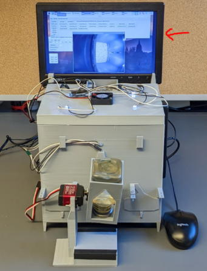
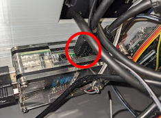
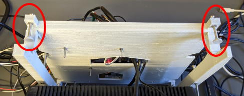
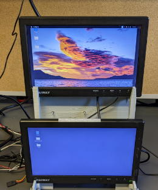
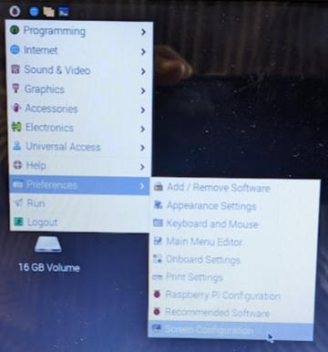
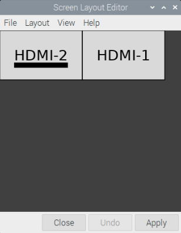
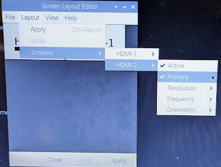
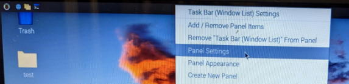
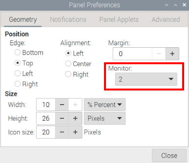
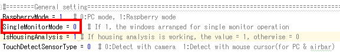

操作用モニタの追加
タッチスクリーンを使用する場合、オペラントハウスはリモートディスクトップ経由で操作することになりますが、操作用のモニタを追加する事で直接操作する事が可能になります。

ラズパイのHDMI1端子にHDMIケーブルを接続します。

モニタ抑えを取り付けます。

操作用モニタを固定します。電源を繋いでラズパイを再起動します。

次に拡張画面の設定を行います。Screen Configurationを開きます。

追加した操作モニター(HDMI-2)を左、元からあるタッチスクリーンモニター(HDMI-1)を右に配置します(※1)。黒の横バーはPrimary monitorである事を示しています。
もしHDMI-2がPrimary monitorでない場合色々と不便なので、右の写真のようにしてPrimary monitorを変更します。
またどちらのモニタの解像度も1366x768(※2)にしてください。Applyボタンを押してラズパイを再起動します。
※1 もし赤外線センサーバーを使わない場合、どのような配置でも構いません。
※2 もし購入したモニタの解像度が1366x768に対応していない場合、OperantHouseのプログラムのソースコードのGeneral settingの"TouchMonitorWidth", "TouchMonitorHeight", "OperationMonitorWidht", "OperationMonitorHeight"の値をモニタの解像度に合わせて変更して下さい）。

もしタスクバーがタッチスクリーン側に表示されている場合はタスクバーを右クリックしてPanel Settingsを開き、Monitorの値を変更してタスクバーを操作モニタへ移してください。


最後にOperantHouseのプログラムのGeneral settingのSingleMonitorModeを0にしてください。

これでOperantHouseを起動すると操作モニタに各種操作ウィンドウが、タッチスクリーンにタッチウィンドウが表示されます。